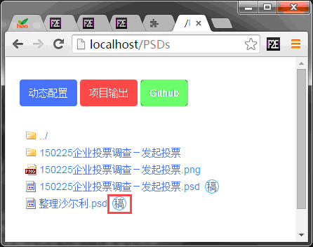
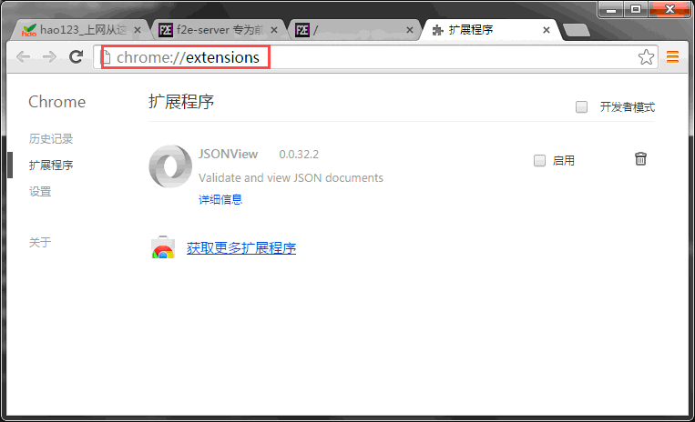
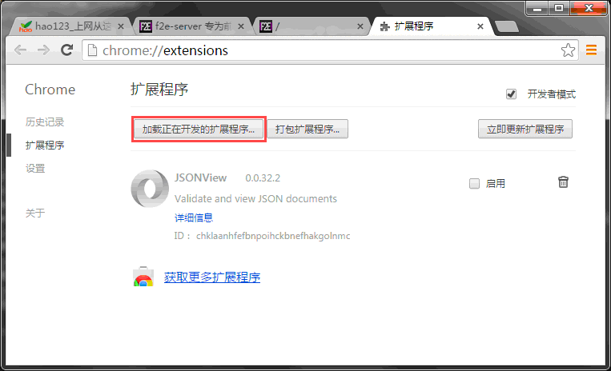
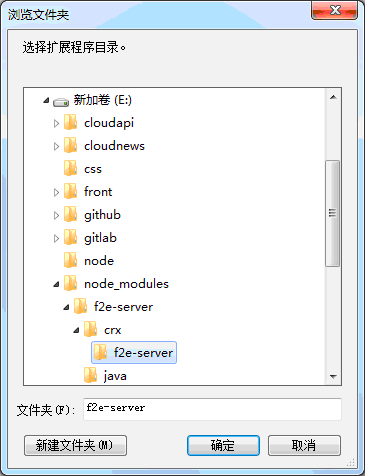
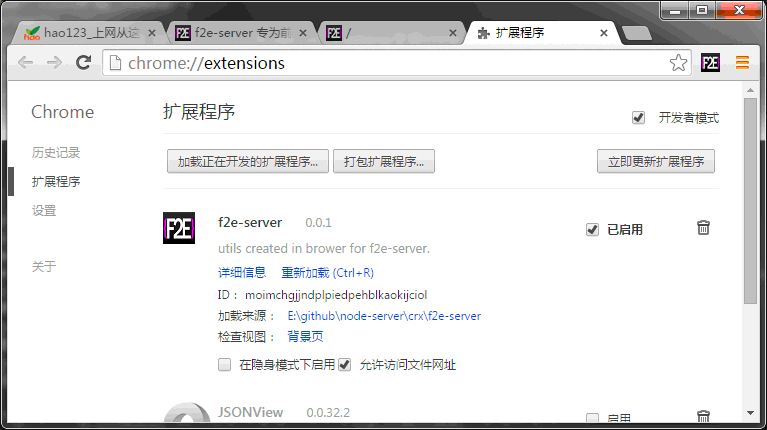
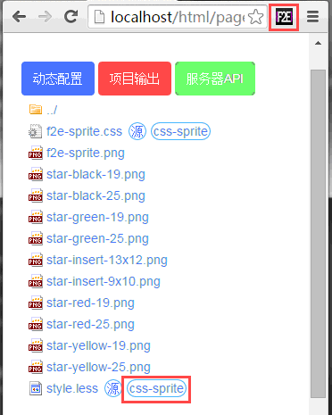
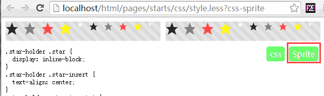
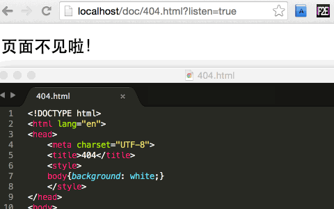

Combine支持(http-concat)
f2e-server 提供了动态的 http-concat(根据指定的url格式进行动态的资源合并) 支持, 如下链接格式均能被识别：
1. "http://localhost/js??jquery.js,comm.js,main.js,index.js"
// 双问号分割pathname和search, search参数多组待合并文件名之间用逗号分割
2. "http://localhost/js/??jquery.js?v1.9.1,comm.js?v1.0,main.js,index.js"
// 每组文件名的版本参数将被忽略
3. "http://localhost/js??dist/jquery.js,comm.js,main.js,../index/index.js"
// 文件名支持携带目录信息
combine只能对文本内容进行简单合并, 不能和模板引擎混杂使用
CSS3自动前缀
f2e-server 服务端提供了动态的添加最新完整CSS3浏览器前缀 【可用于构建阶段】
要求：
- 安装 autoprefixer
npm install autoprefixer - 在conf.js中对应服务下配置参数
"autoprefixer": true
如下源代码：
.page{
position: relative;
transition: transform .6s ease-in .1s;
transform-origin: center;
transform-style: preserve-3d;
transform: rotateY(0deg);
}操作后结果代码：
.page{
position: relative;
-webkit-transition: -webkit-transform .6s ease-in .1s;
transition: transform .6s ease-in .1s;
-webkit-transform-origin: center;
-ms-transform-origin: center;
transform-origin: center;
-webkit-transform-style: preserve-3d;
transform-style: preserve-3d;
-webkit-transform: rotateY(0deg);
transform: rotateY(0deg);
}ES6-ES5自动转换
f2e-server 服务端提供了动态的支持ES6源代码直接转ES5 【可用于构建阶段】
- 安装 babel
npm install babel-corenpm install babel-preset-es2015npm install babel-preset-react- 0.11.0之前的免安装版本已经内置
-
如果是0.11.0以上免安装版本, 请下载分享目录下面的
babel-preset.zip解压到f2e-server/f2e-server/node_modules/文件夹下面
- 在conf.js中对应服务下配置参数
"babel": {} - 完整的babel配置文件可以参考: http://babeljs.io/docs/usage/options/
如下源代码：
var React = require('react');
var ReactDOM = require('react-dom');
ReactDOM.render(
Hello, world!
,
document.getElementById('example')
);
export const a = 123;操作后结果代码：
'use strict';
Object.defineProperty(exports, '__esModule', {
value: true
});
var React = require('react');
var ReactDOM = require('react-dom');
ReactDOM.render(React.createElement(
'h1',
null,
'Hello, world!'
), document.getElementById('example'));
var a = 123;
exports.a = a;babel支持更复杂的配置, 参考babel5的完整options(如:配置amd封装):
exports["localhost"] = {
"root": "/Users/baidu/github/",
babel: {
query: {
modules: 'amd'
}
}
};操作后结果代码：
define(['exports'], function (exports) {
'use strict';
Object.defineProperty(exports, '__esModule', {
value: true
});
var React = require('react');
var ReactDOM = require('react-dom');
ReactDOM.render(React.createElement(
'h1',
null,
'Hello, world!'
), document.getElementById('example'));
var a = 123;
exports.a = a;
});psd文件解析(Beta)
如果安装了完整版本的 f2e-server, 将可以点击获取解析后的png图片文件, 同时创建一个同名的文件夹, 里面存储所有PSD原稿用到的图片和文档碎片。

此功能为开发版本, 极有可能因为nodejs内存不足造成服务器崩溃
upload使用
前端开发调试中可能会遇到文件上传调试的功能, f2e-server 为文件上传提供了比较方便的功能
在conf.js相应服务下配置 upliadFile: true 将可以在服务器下保存文件
返回文件保存信息页面： <%=JSON.stringify(request.files)%>
代码美化
f2e-server 内置highlight-js接口, 提供在服务端对任意代码片段进行美化返回结果. (修改下面链接, 查看代码)
- 文件列表中对于文本类型的文件后面会有一个 “源” 字图标，在安装完highlight之后可以点击查看。
- 插件还支持POST请求进行代码转化, 参数如下:
code: 传入源代码
- 异步接口返回的数据结构如下:
{ code: post.code, // 源代码返回 output: highlight(post.code), //美化后代码 style: style // highlight 选用的style源码方便使用方输出 }
占位图片
f2e-server 内置了占位图片效果, 直接访问: /placeholder.jpg 返回效果 (修改下面参数, 获取图片)

参数样例：/placeholder.jpg?w=320&h=200&bg=0066ff&fc=ff6600
w :图片宽度h :图片高度bg:背景颜色fc:字体颜色
placeholder插件通过java-swing技术实现, 需要本机的jre环境支持。
Chrome插件
f2e-server 内置一个chrome插件开发目录, 目前提供了两个简单的插件功能(后续可能提供更多功能)
- 浏览器二维码本地生成
- css-sprite图片合并
如何导入:
-
打开chrome扩展程序
chrome://extensions/
-
打开开发者模式

-
加载正在开发的扩展程序

-
完成

-
点击浏览器右上角小图标
 可查看当前页面的二维码
可查看当前页面的二维码
-
CSS-Sprite
f2e-server 内置的 css-sprite 通过chrome插件实现, 可以操作任意css文件
在访问列表中查看css/less文件时, 点击如图链接:

进入后先点击 Sprite 保存合并图片, 再点击存储css文件

事实上：在css文件路径后面手动添加search参数
css-sprite就可以开启
实时刷新
项目文件夹下面任何文件文件夹变化都会触发刷新操作
如果想要快速支持页面自动刷新，可以在访问url后面增加search参数 listen=true

实时刷新-热部署
- 在conf.js 文件中配置
livereload将支持实时将修改的文件自动输出到output目录 - 注需要在项目根目录页面，点击“项目输出” 确保首次项目路径完成
- 使用项目时候为了能够在其他服务器上面也能使用到f2e-server的livereload，提供了代码嵌入的方式这个需要配置文件映射
- 另外，由于部分子文件修改，会导致一系列文件关联更新，所以也保留相关接口，配置样例如下：
livereload: { inject: function(pathname){ // 只在html文件中插入livereload代码 return pathname.match(/\.html/); }, relative: function(pathname){ var root = conf.root; if(pathname.match(/layout\.html/)){ // 如果是layout.html修改， pages文件夹下面所有管理的文件都需要修改。 return fs.readdirSync(path.join(root, 'pages')) .map(function(filename){ return 'pages/' + filename; }); } } }